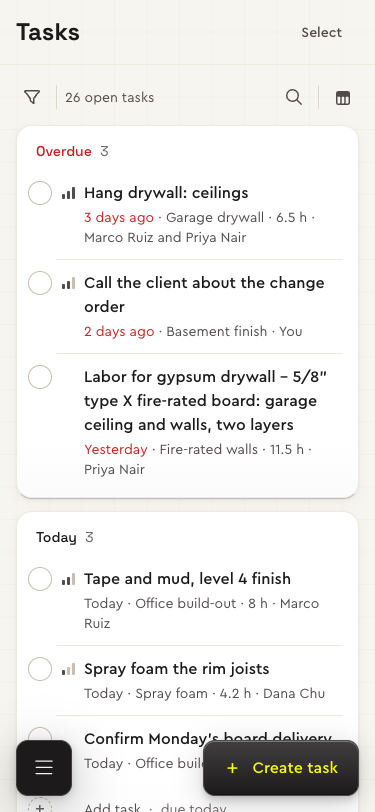
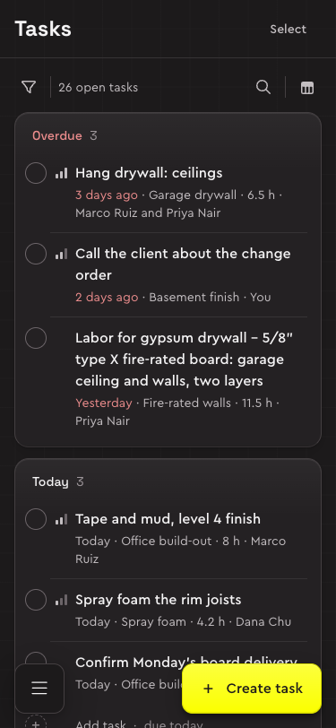

Bolster's Tasks page (~/my-tasks) is where the team sees what's late, what's due and who does what. Built first as a list, it lost what makes a to-do work: the tick, the fields set in the row, adding inside a group (D71). So it's a page type of its own, built on the list's parts.




Try it: the to-do concept. The same tasks as a list, for comparison: Tasks, built by the list recipe.
Who it's for
Everyone on the team with work on jobs. Most tasks come from a job's schedule (its labour, with its hours), some are written by people, some are material items. They come to tick work off, see what's due today, and hand work to someone.
Parts
| Part | What it holds | Built from |
|---|---|---|
| Page header | Tasks, and Create task. | App shell |
| Toolbar | Add filter as an icon and the count on the left; the search as a button that opens into a field, and display settings (Group by: Date, Job) on the right. Set filters are chips on the row below, with Clear all. Trying out: the toolbar on the page, not on a card of its own. | Toolbar, Search field, Chip |
| Group cards | Overdue, Today, Tomorrow, This week, Later, No due date (or one per job), each a card with its open count; Completed last, folded. No summary cards above them. | Draft, in the concept |
| Rows | The round check against the title and its job; then priority, the hours, the due date in words (Today, Saturday, 3 days ago, red once late) and the faces of who's on it. | Draft, with Avatar |
| The task | Opened from its title: beside the list from 1280 wide, a sheet below. Its fields set the same way, and its story. | Record |
| Select mode | The checks turn into square boxes; the bar offers Complete, Due date and Assign. | Floating bar, Choice |
| Pickers and feedback | Each chip's menu (a sheet on phones), the date picker, the toast with Undo. | Menu, Calendar, Toast |
It's the only page in the focused width (trying out, D106): a 960 column, centred, so a title has about 70 characters of room and its date and people sit beside it rather than 900px away. Tables, boards, the calendar and the timeline keep their own widths. Patterns: Filtering, Drag and drop, Bulk actions, Feedback.
Behaviour
The list works on its rows in place: nothing asks first, and what changes stays where it was until the list is next drawn (I17).
| What | How |
|---|---|
| Completing | The round check is a real checkbox, named “Complete …”. A click or Space ticks it: the task is struck through where it is, the group's count drops, and a toast says “Task completed” with Undo. Unticking reopens it. |
| Where done goes | It stays in its group until the list is next drawn (a search, a filter, the other grouping), then joins Completed, the last group, folded. |
| Setting a field | The due date and the people are chips, priority the bars in the columns. Each opens a menu that saves on pick; the people's stays open and ticks people on and off. A changed date moves the row to its new group. Empty ones show on hover and focus only. |
| Adding | Add task at the end of a group opens a field there: Enter adds the task with the group's day or job and keeps the field for the next; Escape closes it. Create task opens it under Today. |
| Reordering | Drag a row by its handle (on hover), or focus the handle and press Alt with ↑ or ↓. On phones a long press lifts the row. A line in the seam between rows shows where it lands. |
| Moving to another day | Dropped into another day's group, a task takes that day: Today and Tomorrow exactly, This week and Later their first day, No due date none, with Undo. Overdue and Completed take no drops; grouped by job, a task stays in its job. |
| Opening | The title opens the task beside the list; Close, or Escape on the sheet, returns focus to the title. |
Tasks open with no filter set, every kind shown (trying out, D108); Bolster opens on general and labour tasks, which is one chip away.
Principles
- The check is the row. Round, first, one tap, so it never reads as selecting; selecting is a mode. A thin, quiet ring, so the task's name leads.
- Done stays in place, struck through, until the list is next drawn.
- Grouped by when. Each header counts its open tasks; an empty group doesn't show. Each group is a card, so a day reads as one piece.
- Fields change in place. No “Set date” on every row: an empty field shows as a dashed chip or a ghost face on hover.
- Priority as bars, one, two or three for Low, Med and High, in grey: the count of bars says it, not a colour.
- Add where you are, filled with the group's value.
- Bolster's filters: Show (General tasks, Labor tasks, Material items), Priority, Assignee and a Period of due dates, each several at once.
Drafts
New parts this page carries, waiting for the product designer's approval before they move into the system.
| Draft | What it is | Decisions |
|---|---|---|
| Round check | Completes a task in one click, struck through where it is, with Undo; the square box in Select mode. | D72, I17 |
| Priority mark | A task's priority at a glance; a click opens its menu and saves on pick. | D72, I17 |
| In-place chips | The due date and the people, set in the row; a menu (a sheet on phones) that saves on pick. | D72, I17 |
| Group cards | A card per group with its open count, Completed last and folded; a drop into another day's group gives the task that day. One left edge for the name, checks and Add task (D114). | D72, D114, I17 |
| Add task | At a group's end, a dashed ring with a plus, waiting as the next task's check; a field that adds with the group's day or job. | I17 |
| Drop line | Where a dragged task will land: a line in the seam with a dot at its start. | D104, I17 |
| Search as a button | On a toolbar on the page, an icon that grows into its field and closes when left empty; shared with the pipeline. | D103, D104 |
Open questions
- How long Completed keeps tasks: the last 30 days, as the lists' endings?
- Recurring tasks, subtasks and comments: none were seen on Bolster's page.
- Whether the to-do gets a recipe of its own, sharing the list's toolbar, filters, chips, bulk bar and record (proposed in D71).
- The toolbar on the page or on its own card: being compared, not a rule yet.
Decisions and contracts
- D71Tasks are a to-do list, not a listDecided
- D72The to-do list, built as a conceptDecided
- D106A focused width for one column of workTrying out
- D108Tasks open unfilteredTrying out
- D113Tasks: the due date fills its column
- D114Tasks: the group card, priority in the columns
- D104The pipeline's Lost column, its toolbar as Tasks', jobs that openTrying out
- I17To-do rows